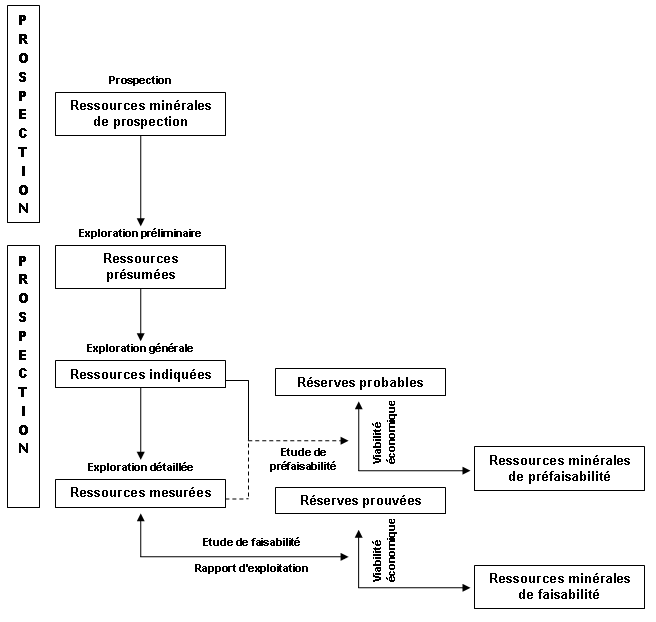

|

|
| ACCUEIL | LOI N°01-10 | DÉCRETS PRÉSIDENTIELS | DÉCRETS EXÉCUTIFS | ARRÊTÉ INTERMINISTÉRIEL | ARRÊTÉS |
|
Décret exécutif N° 05-252
Le Chef du Gouvernement,
Décrète : Article 1er : En application des dispositions de la loi n° 01- 10 du 11 Rabie Ethani 1422 correspondant au 3 juillet 2001 portant loi minière, notamment son article 33, le présent décret a pour objet de fixer les modalités d'établissement de l'inventaire minéral et le mode de présentation du bilan annuel des ressources minérales et des réserves minières. DE L'INVENTAIRE MINERAL Article 2 : Le patrimoine minéral du pays est constitué par les éléments suivants dûment reconnus, décrits et géoréférenciés, il s‘agit des : - gisements de substances minérales énergétiques solides, de substances minérales métalliques, et de substances minérales non métalliques. - gîtes de ces substances minérales, - indices de ces substances minérales. Article 3 : L'inventaire minéral, partie intégrante de l‘infrastructure géologique, consiste en l‘enregistrement descriptif et estimatif des éléments constituant le patrimoine minéral tel que défini à l'article 6 de la loi minière sus visée. Sont également objet de cet inventaire, et dans les mêmes conditions, les anomalies géochimiques et géophysiques y afférentes. Article 4 : L'enregistrement des éléments constitutifs du patrimoine minéral et des anomalies géophysiques et géochimiques visés aux articles 2 et 3 ci-dessus est effectué notamment à partir des données et renseignements issus : - des résultats des travaux d'infrastructure géologique réalisés par le service géologique national, - de renseignements et documents remis dans le cadre du dépôt légal de l‘information géologique, - des données issues des rapports remis par les opérateurs miniers à l‘agence nationale de la géologie et du contrôle minier. Article 5 : La mise en place et la gestion de la base des données relative à l'inventaire minéral sont assurées par l'agence nationale de la géologie et du contrôle minier selon une procédure interne à cette agence. Article 6 : Les données de l'inventaire minéral sont mises à la disposition du public dans les conditions prévues par l'agence nationale de la géologie et du contrôle minier, et conformément à la règlementation. DE LA CLASSIFICATION DES RESSOURCES MINERALES ET RESERVES MINIERES ET DE LEUR BILAN Article 7 : L‘élaboration de bilans relatifs aux ressources minérales et réserves minières du pays nécessite la mise en application d‘une classification de ce potentiel se référant à des critères objectifs, comparables et fiables, sur la base des procédures de recherche et d‘évaluation appliquées dans la pratique, et de leurs résultats. Article 8 : Conformément à l'article 13 de la loi minière sus visée, la recherche minière est subdivisée en deux étapes : prospection et exploration. La progression au cours de l'étape d'exploration minière se fait à travers trois phases successives, telles que définies à l‘annexe I du présent décret, déterminées par le niveau de connaissance géologique atteint et le degré de certitude des résultats des travaux réalisés. Il s‘agit de :
Article 9 : Conformément à la nomenclature des différentes phases d‘évaluation de la faisabilité d‘un projet minier présentée en annexe II du présent décret, la classification nationale des ressources minérales et réserves minières s'établit comme suit : - Ressources minérales de prospection
- Ressources minérales d'exploration, subdivisées en :
- Ressources minérales dégagées à la suite d‘études de préfaisabilité ou de faisabilité, qui sont, selon le cas, qualifiées de :
- Réserves minières issues des études de préfaisabilité ou de faisabilité, qui sont, selon le cas des : La définition de ces catégories de ressources minérales et de réserves minières, ainsi que leurs principaux critères de classification sont présentés en annexes III et IV du présent décret. Article 10 : Conformément à la loi n°01-10 du 3 Juillet 2001 portant loi minière, et aux textes pris pour son application l'agence nationale de la géologie et du contrôle minier assure : - le suivi permanent et la mise à jour des ressources minérales et des réserves minières du pays, - l'élaboration et la présentation du bilan annuel par substance des ressources minérales et réserves minières du pays. Article 11 : Dans le cadre du suivi et de la mise à jour de ces ressources minérales et réserves minières du pays, l'agence nationale de la géologie et du contrôle minier est chargée : - à titre transitoire, de transposer les estimations des ressources minérales et réserves minières des gisements déjà mis en évidence sur fonds publics et non exploités, ou en situation de surface ouverte, à la nouvelle classification nationale adoptée conformément à l'article 9 ci dessus. - de diffuser les normes et émettre les directives et recommandations pour l‘établissement des rapports de calculs des ressources minérales et réserves minières, y compris celles relatives à la définition des personnes compétentes habilitées à mener ces travaux. Les personnes compétentes sus visées doivent avoir reçu la formation adéquate et posséder l‘expérience de l‘évaluation des ressources et des réserves du type du gisement étudié. Article 12 : Tout titulaire de titre minier doit remettre annuellement, à l'agence nationale de la géologie et du contrôle minier, la situation des ressources minérales et des réserves minières définies sur le périmètre objet du titre minier. Article 13 : A compter de la date de mise en application du dispositif objet de l‘article 11 ci-dessus, le calcul de toute ressource minérale et réserve minière sur un périmètre objet d‘un titre minier, doit être effectué conformément à la classification objet de l'article 9 ci-dessus, et de l'annexe III du présent décret. Article 14 : Le bilan périodique des ressources minérales et réserves minières du pays par substance, est mis à la disposition du public par l'agence nationale de la géologie et du contrôle minier, conformément à la législation et à la réglementation en vigueur. Article 15 : Le présent décret sera publié au journal officiel de la République algérienne démocratique et populaire.
Fait à Alger, le 12 Joumada Ethania 1426 correspondant au 19 Juillet 2005. ANNEXE I DES CARACTERISTIQUES DES ETAPES DE LA RECHERCHE ET DES PHASES DE L‘EXPLORATION MINIERES PROSPECTION La prospection identifie, à l'échelle régionale, les zones à fort potentiel minéral en s'aidant des moyens suivants : résultats d'études géologiques régionales, cartes géologiques régionales, reconnaissance préliminaire sur le terrain, méthodes aéroportées et indirectes, suppositions et extrapolations géologiques. L'objectif est de localiser les zones minéralisées qui justifient une étude plus poussée. Dans les meilleures conditions, seule une estimation de l‘ordre de grandeur du potentiel peut être faite. EXPLORATION PRÉLIMINAIRE L'exploration préliminaire est un processus progressif qui consiste à rechercher un gisement minéral en délimitant les zones prometteuses. Les méthodes utilisées sont l'identification des affleurements, la cartographie géologique et des méthodes indirectes telles que les études géophysiques et géochimiques. Le creusement de tranchées, les forages et l'échantillonnage peuvent être employés dans une certaine mesure. L'objectif est d'identifier un gisement qui fera l'objet d'une exploration plus poussée. Les quantités minérales présumées sont déterminées sur la base de l'interprétation des résultats géologiques, géochimiques et géophysiques. EXPLORATION GÉNÉRALE L'exploration générale est la délimitation initiale d'un gisement identifié. Les méthodes utilisées sont notamment la cartographie de surface, un échantillonnage très espacé, le creusement de tranchées et de forages pour l'évaluation préliminaire de la quantité et de la qualité des minéraux (avec des tests minéralogiques en laboratoire, si nécessaire), ainsi qu'une interpolation limitée à partir de méthodes indirectes. L'objectif est de déterminer les principales caractéristiques géologiques d'un gisement en fournissant une indication raisonnable de sa continuité et une première évaluation de ses dimensions, de sa configuration, de sa structure et des teneurs qu‘il renferme. Le degré de certitude devrait être suffisant pour permettre de décider si une étude de préfaisabilité et une exploration détaillée se justifient. EXPLORATION DÉTAILLÉE L'exploration détaillée consiste à délimiter un gisement reconnu, de façon détaillée et dans ses trois dimensions. On procède par prélèvement d'échantillons en divers points: affleurements, tranchées, forages, galeries, tunnels, etc…La maille d'échantillonnage doit être très fine pour que les dimensions, la forme, la structure, les teneurs et d‘autres caractéristiques du gisement puissent être établies avec un degré élevé de certitude. Des essais de traitement exigeant un échantillonnage massif peuvent être nécessaires. Les renseignements obtenus permettent de décider s'il y a lieu de procéder à une étude de faisabilité. ANNEXE II DES PHASES D'EVALUATION DE LA FAISABILITE D‘UN PROJET MINIER ETUDE GÉOLOGIQUE L'étude géologique permet une évaluation initiale de la viabilité économique d‘un projet minier. Cette évaluation est obtenue en définissant des valeurs seuils de la teneur, de l‘épaisseur, de la profondeur et du coût estimé par rapport à des gisements comparables en exploitation. Elle n‘est cependant pas assez détaillée pour permettre de définir des catégories de viabilité économique. Les quantités estimées ne peuvent, en général qu‘indiquer que le gisement présente un intérêt économique intrinsèque, c'est à dire qu'il peut être qualifié de potentiellement économique. L'étude géologique comporte les étapes et phases décrites en annexe I. ETUDE DE PRÉFAISABILITÉ L'étude de préfaisabilité fournit une estimation préliminaire de la viabilité économique d'un gisement sur laquelle on se fonde pour entreprendre des recherches plus poussées (exploration détaillée et étude de faisabilité). Menée habituellement à la suite d'une campagne d'exploration concluante, elle résume toutes les informations géologiques, techniques, environnementales, juridiques et économiques rassemblées à ce stade sur le projet. La marge d‘erreur est variable et dépend du degré de maturation du projet, et donc de la fiabilité de certaines données comme les chiffres des réserves / ressources provenant de l'exploration générale et éventuellement de l'exploration détaillée, les résultats d'essais techniques en laboratoire et les estimations des coûts. L'étude de préfaisabilité aborde l‘ensemble des éléments que l'étude de faisabilité devra reprendre, détailler et préciser. ETUDE DE FAISABILITÉ L'étude de faisabilité évalue la qualité technique et la viabilité économique d'un projet d'exploitation minière. Elle conduit à la prise de décisions en matière d'investissement, et constitue un document acceptable par les banques pour obtenir le financement d‘un projet. Elle permet de vérifier toutes les informations géologiques, techniques, environnementales, juridiques et économiques relatives au projet. Les données relatives aux coûts doivent être suffisamment maîtrisés. Cette maîtrise dépend notamment de la fiabilité d‘informations telles que les chiffres des réserves issus de l'exploration détaillée, les résultats d‘essais pilotes et le calcul des dépenses d'équipement et des frais d'exploitation à prévoir. En général, une étude séparée d‘impact environnemental est requise. RAPPORT D'EXPLOITATION On entend par rapport d'exploitation la documentation relative à l'état de développement et d'exploitation d'un gisement au cours de sa vie économique, y compris les plans d'exploitation en cours. Il est généralement établi par l'exploitant de la mine. Il tient compte de la quantité et la qualité des minéraux extraits pendant la période considérée, des changements survenus dans les quantités viables économiquement, du fait de variations des prix ou des coûts, de la mise au point de techniques appropriées, de nouvelles réglementations imposées, notamment pour la protection de l'environnement, et des données relatives à l'exploration menée pendant l'exploitation. Il décrit la situation actualisée du gisement et fournit un état détaillé, fidèle et à jour des réserves et ressources restantes. ANNEXE III
CLASSIFICATION NATIONALE DES RESSOURCES MINERALES RESSOURCE MINÉRALE DE PROSPECTION Une ressource minérale de prospection est issue d‘une étude de prospection (étude géologique régionale, levés aéroportés et autres méthodes indirectes, et contrôle préliminaire sur le terrain) ayant pour objet d'identifier des zones à fort potentiel minéral. Une appréciation quantitative ne devrait être faite que si l'on dispose de données suffisantes et qu'il est possible d'établir une analogie avec des gisements connus présentant des caractéristiques géologiques comparables. Cette appréciation se limite à un ordre de grandeur du potentiel. Le degré de confiance est inférieur à celui associé à une ressource minérale présumée, et n'est généralement pas suffisant pour une estimation qualitative et quantitative tels que teneur et tonnage. RESSOURCE MINÉRALE PRÉSUMÉE Une ressource minérale présumée est une partie d'une ressource minérale qui a été déterminée à partir d'indications géologiques et d'une continuité géologique supposée mais non vérifiée lors d'une exploration préliminaire. Les informations recueillies sur cette ressource, par des techniques appropriées d'exploration de sites tels que des affleurements, tranchées, puits, ouvrages miniers souterrains et de forage, sont limitées et avec une qualité et une fiabilité incertaines mais permettant d'estimer le tonnage / volume, la qualité et la teneur minérale avec un degré de certitude et un niveau de confiance faibles. Le niveau de confiance correspondant à une ressource minérale présumée est inférieur à celui qui est associé à une ressource minérale indiquée. RESSOURCE MINÉRALE INDIQUÉE Une ressource minérale indiquée est une partie d'une ressource minérale ayant fait l'objet d'exploration générale, d'échantillonnages et d'essais par des techniques appropriées sur des sites tels que des affleurements, tranchées, ouvrages miniers souterrains et forages, qui sont trop espacés ou situés à intervalles inappropriés pour confirmer la continuité géologique mais qui sont suffisamment rapprochés pour laisser supposer une telle continuité, et où la collecte de données fiables permet d'estimer les tonnage / volume, les densités, les dimensions, la forme, les caractéristiques physiques, la quantité et la teneur minérale, avec un niveau de confiance raisonnable mais pas avec un degré élevé de certitude. Une ressource minérale indiquée est estimée avec un niveau de certitude et un niveau de confiance inférieurs à ceux d'une ressource minérale mesurée, mais avec une meilleure fiabilité que pour une ressource minérale présumée. RESSOURCE MINÉRALE MESURÉE Une ressource minérale mesurée est une partie d'une ressource minérale ayant fait l'objet d‘exploration détaillée, d'échantillonnages et d'essais par des techniques appropriées sur des sites tels qu'affleurements, tranchées, puits, ouvrages miniers souterrains et de forage qui sont suffisamment rapprochés pour confirmer la continuité géologique et qui fournissent des données fiables et détaillées permettant d'estimer avec un degré élevé de certitude le tonnage / volume, la densité, les dimensions, la forme, les caractéristiques physiques, la qualité et la teneur minérale. RESSOURCE MINÉRALE DE PRÉFAISABILITÉ Une ressource minérale de préfaisabilité, est une partie d'une ressource minérale indiquée et dans certaines circonstances d'une ressource minérale mesurée, dont une étude de préfaisabilité a montré qu'elle n'est pas économique ou est seulement potentiellement économique au moment de l'élaboration de cette étude. RESSOURCE MINÉRALE DE FAISABILITÉ Une ressource minérale de faisabilité, est une partie d'une ressource minérale mesurée, dont une étude de faisabilité a montré qu'elle n'est pas économique ou est seulement potentiellement économique au moment de l'élaboration de cette étude. RÉSERVES MINIERES PROBABLES Une réserve minière probable, décrite en termes de tonnage / volume exploitable et de teneur / qualité, est la partie d'une ressource indiquée ou mesurée ayant fait l'objet d'étude de préfaisabilité technique et économique et dont les conclusions montrent qu‘il est justifié de l'exploiter dans les conditions techniques, économiques, environnementales et juridiques du moment. RÉSERVES MINIÊRES PROUVÉES Une réserve minière prouvée, décrite en termes de tonnage / volume exploitable et de teneur / qualité, est la partie d'une ressource minérale mesurée qui a fait l'objet d'étude de faisabilité technique et économique ou d'un rapport d'exploitation, qui conclue qu‘il est justifié de l'exploiter dans les conditions techniques, économiques, environnementales et juridiques du moment. ANNEXE IV
CLASSIFICATION NATIONALE DES RESSOURCES MINERALES
 |